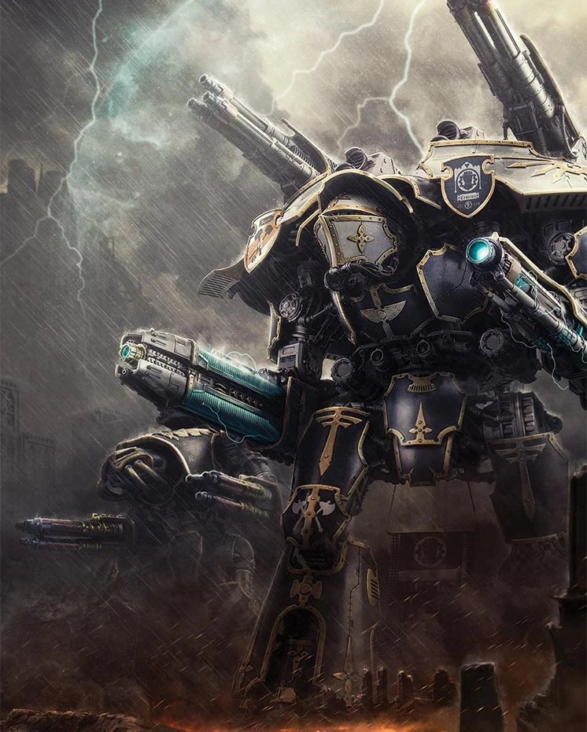
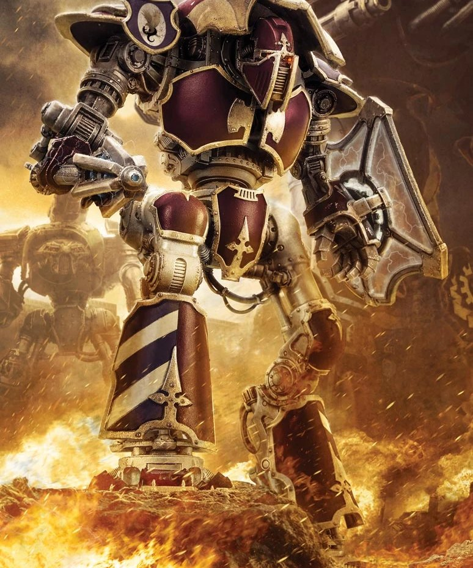

Battle of Molech
| Battle of Molech | |
|---|---|
| Part of the Horus Heresy | |
 A loyal Warlord Titan in the defence of Molech Artwork © Games Workshop | |
| Date | 009.M31[a] |
| Location | Molech, Segmentum Solar |
| Result | Decisive traitor victory. Molech conquered; House Devine turns traitor; Horus enters the Warp gate beneath Lupercalia |
| Belligerents | |
| Loyalists | Traitors |
| Commanders and leaders | |
| † Killed in action · ‡ Executed | |
| Strength | |
| Casualties and losses | |
| Loyalists: | Traitors: |
| Not recorded[n] | |
The Battle of Molech was the invasion of the Knight World of Molech by the Warmaster Horus in 009.M31, during the Horus Heresy. Molech was among the most strongly garrisoned worlds on the approaches to Terra, defended by its Knight houses, three loyal Titan Legions, more than a hundred regiments of the Imperial Army and detachments of the Ultramarines and Blood Angels. Horus attacked with his own Sons of Horus, the Death Guard under Mortarion, the Emperor's Children under the daemon primarch Fulgrim, and four traitor Titan Legions.[1][2]
The battle was decided by treachery. The ruling Knight house of Molech, House Devine, long corrupted by a serpent cult of Slaanesh, turned on the defenders at the height of the fighting for the capital, Lupercalia, and brought down the loyal Imperator Titan that anchored the line. The loyal army was destroyed almost to the last man. Horus, meanwhile, left the battle to pursue his true purpose. Beneath Lupercalia lay an ancient gateway into the Warp, which the Emperor had once used and which he had garrisoned the world to guard. Horus passed through it and returned with far greater power than before.[1][3]
Background
[edit]Molech
[edit]Molech was a verdant Knight World on the routes toward the Sol System. It was brought into the Imperium in 869.M30 in a compliance led by the Emperor in person, with three primarchs: Horus, Lion El'Jonson and Jaghatai Khan. The compliance was bloodless. The capital was renamed Lupercalia in honour of Horus. The world was ruled thereafter by House Devine, its high house, from the fortress called the Dawn Citadel, and a large Imperial garrison was left in place, far larger than such a world would seem to need.[2][4]
The people of Molech never learned why. The Emperor had come to the world to secure a gateway into the Warp hidden beneath the land on which Lupercalia stood. Inquisitorial sources hold that long before the founding of the Imperium the Emperor had used the gate to enter the Warp, and that there he had faced the Ruinous Powers and won from them the power he needed for his work. Horus, who had been present at the compliance, knew of the gate.[3]
The Knight houses
[edit]Molech's nobility was divided among several houses. House Devine of the Western Marches held the rule of the world as the old seneschals of the vanished High Kings of Molech. House Tazkhar came from the southern steppes and was known for its ferocity. House Kaska of the western peninsula was proud and plain-living. House Indra of the southern swamps was called the Mad House by its peers. House Mamaragon held the islands of the northern Azure Sea. House Donar held lands in the east.[4]
Under its noble surface House Devine had long been rotten. The worship of an old serpent god of Molech, a deity of excess and vengeance, had been suppressed by the Imperial Truth but survived in cults that the house protected. The last true seneschal, Cyprian Devine, knew nothing of the plotting of his wife and his second son, Raeven. His eldest son and heir, Albard, had been rejected by his Knight armour through their schemes and held for years as a captive.[4]
Prelude
[edit]When loyal commanders learned that a traitor fleet was approaching, they reinforced Molech. Three loyal Titan Legions mustered on the world: Legio Crucius, Legio Gryphonicus and Legio Fortidus. More than a hundred Imperial Army regiments joined the Knight houses, and detachments of the Ultramarines and Blood Angels were already present. It was intended as one of the strongest stands on the road to Terra.[2][5]
Malcador the Sigillite also sent a party of his Knights-Errant under Garviel Loken, a former captain of the Luna Wolves. Their task was to infiltrate the Warmaster's flagship, the Vengeful Spirit. The Vindicare assassin Eristede Kell, the last survivor of an earlier attempt on the Warmaster's life, was also aboard the flagship, hunting Horus.[1]
Course of the battle
[edit]The landings
[edit]Horus's first assault devastated cities and strongholds across Molech. In the confusion Raeven Devine murdered his father and took his place as lord of the world. Horus himself took the field with his sons and faced a host of Imperial Knights. He destroyed them almost alone. Only Raeven Devine is recorded to have escaped.[4]
With a beachhead won, the main traitor host landed: the Sons of Horus, Death Guard and Emperor's Children, with their primarchs, and four Titan Legions.[2]

Mortarion in the east
[edit]Mortarion led the Death Guard against the eastern city of Ophir, defended by Lord Bolmar of House Donar, who made a desperate last stand there. The Death Guard released the life-eater virus on the jungles of Kush, an early example of the plague warfare for which the XIV Legion would become infamous. Mortarion then took the Preceptor defence line with the help of traitor Titans.[4]
Fulgrim and House Devine
[edit]Fulgrim's task was the corruption of House Devine. During the invasion Albard Devine escaped his captivity, killed his half-brother Raeven and reclaimed his birthright and his Knight armour, Banelash. But the armour had been tainted by Raeven and by the serpent cult, and when Albard joined his broken mind to it, the corruption took him. Fulgrim, now a daemon of Slaanesh, completed the work. Albard became obsessed with visions of a great serpent, and many of his retainers followed him into the god's service.[4]

Lupercalia
[edit]The loyal armies were pushed back toward Lupercalia. The Knight houses led the defence, rallying the Imperial Army, the Legion detachments and the Titans, but each line was broken in turn. The first great blow fell on the Iron Fist, the mountain on the city's western flank that housed the Titan Legions' fortresses. Horus redirected an orbital defence laser against it and destroyed it in a single strike.[4]
The final blow was struck by House Devine. During the battle for Lupercalia, the Knights of Devine turned their weapons on the Imperator-class Titan Paragon of Terra of Legio Crucius, the anchor of the Imperial line. Its plasma reactor failed and exploded, killing thousands of defenders and leaving a crater nearly a kilometre wide. Traitor Titans marched through the gap. Caught between the betrayers and the advancing traitor host, the defenders were destroyed. Records state that only one in a hundred of the Imperial Army soldiers on Molech survived the campaign.[4][5]
The Warp gate
[edit]Horus did not stay to see the city fall. He left the battle before its end and went to the gate beneath Lupercalia. What happened there is known only from sealed accounts. Horus entered the Warp, as his father had done before him, and returned. Inquisitorial scholars hold that he made his own bargain with the Ruinous Powers and was invested with far greater power, at the price of what remained of his soul. Imperial scholars hold that much of the power he showed in the last years of the war was won there.[3][6]
The Knights-Errant and the assassin aboard the Vengeful Spirit did not kill the Warmaster. Loken survived the mission and returned to the loyalist cause.[1]
Aftermath
[edit]Molech fell to the traitors and was held by them until the end of the Heresy. House Devine became the first Knight house to fall to Chaos. Houses Kaska and Indra were destroyed, along with others. A few survivors of House Mamaragon lived through the occupation, and the Tazkhar Steppe became the heart of a loyal resistance.[4]
During the Great Scouring, in about 015–020.M31,[o] a combined force of Houses Cadmus, Terryn and Borgius reclaimed Molech and destroyed what remained of House Devine. Some of its Knights were never accounted for and are thought to have fled to the Eye of Terror with the traitor Legions. The surviving loyal houses rebuilt their world after the war.[4]
Significance
[edit]The Battle of Molech is held by Imperial scholars to mark a turning point in the Heresy. Horus came out of the Warp gate transformed, with powers he used through the rest of the war and in his final confrontation with the Emperor aboard the Vengeful Spirit at the end of the Siege of Terra. The betrayal of House Devine also showed that the Imperial Knights, bound to the Mechanicum and to their own codes, were not proof against the traitors. Since that first fall, only a handful of Knight houses have been corrupted by Chaos.[3][4]
Timeline
[edit]| Date | Event |
|---|---|
| 869.M30 | Molech is brought into compliance by the Emperor with Horus, Lion El'Jonson and Jaghatai Khan; its capital is renamed Lupercalia. |
| c. 000–008.M31 | The serpent cult of Slaanesh spreads within House Devine; Albard Devine is imprisoned by his kin.[p] |
| c. 008.M31 | Loyal commanders reinforce Molech with Legio Crucius, Legio Gryphonicus and Legio Fortidus; Garviel Loken's Knights-Errant are sent to the Vengeful Spirit.[q] |
| 009.M31 | Horus's first assault; Raeven Devine murders his father, and Horus destroys a host of Knights. |
| 009.M31 | The Sons of Horus, Death Guard, Emperor's Children and four Titan Legions land. |
| 009.M31 | Mortarion takes Ophir and the Preceptor line; the life-eater virus is released on Kush. |
| 009.M31 | Albard Devine kills Raeven, takes the Knight Banelash and is corrupted by Fulgrim. |
| 009.M31 | The Iron Fist is destroyed by an orbital laser; House Devine destroys the Paragon of Terra and Lupercalia falls. |
| 009.M31 | Horus enters the Warp gate beneath Lupercalia and returns with greater power. |
| 009–014.M31 | Molech is held by the traitors; a loyal resistance holds out on the Tazkhar Steppe. |
| c. 015–020.M31 | Houses Cadmus, Terryn and Borgius reclaim Molech and destroy House Devine.[r] |
See also
[edit]Notes
[edit]- ^ Titan Legion records give 009.M31. Some Administratum chronologies place the invasion in 010.M31.
- ^ An Ultramarines detachment.
- ^ A Blood Angels detachment.
- ^ The Vindicare Assassin was Eristede Kell.
- ^ Four traitor Titan Legions fought, among them Legio Interfector.
- ^ House Devine joined from mid-battle.
- ^ Lord Bolmar led House Donar.
- ^ a b Estimated from the regiment count; Imperial records give no total. The soldiers formed 100+ regiments of the Imperial Army.
- ^ The Titan Legions were Crucius, Gryphonicus and Fortidus.
- ^ House Devine, from mid-battle.
- ^ The Titan was the Paragon of Terra.
- ^ Houses Kaska and Indra and others were destroyed.
- ^ Losses were light in comparison.
- ^ Molech fell and was held by the traitors until the end of the Heresy. The Iron Fist, the mountain fortress of the Titan Legions, was the first great blow.
- ^ Date estimated from the sequence of events.
- ^ Date estimated from the sequence of events.
- ^ Date estimated from the sequence of events.
- ^ Date estimated from the sequence of events.
References
[edit]- ^ a b c d Haley, Guy. Dark Imperium (Second Edition) (novel). Black Library, Ch. 1. Wraight, Chris. Rebirth (novella). Black Library.
- ^ a b c d Wraight, Chris. Brotherhood of the Storm (novel). Black Library. Abnett, Dan. Horus Rising (novel). Black Library.
- ^ a b c d McNeil, Graham. The Wolf of Ash and Fire (novella). Black Library. Kyme, Nick. Promethean Sun (novella). Black Library.
- ^ a b c d e f g h i j k Kyme, Nick. Feat of Iron (novella). Black Library. McNeill, Graham. False Gods (novel). Black Library.
- ^ a b Counter, Ben. Galaxy In Flames (novel). Black Library. Swallow, James. Flight of the Eisenstein (novel). Black Library.
- ^ McNeill, Graham. Fulgrim (novel). Black Library. McNeill, Graham. The Reflection Crack'd (novella). Black Library.